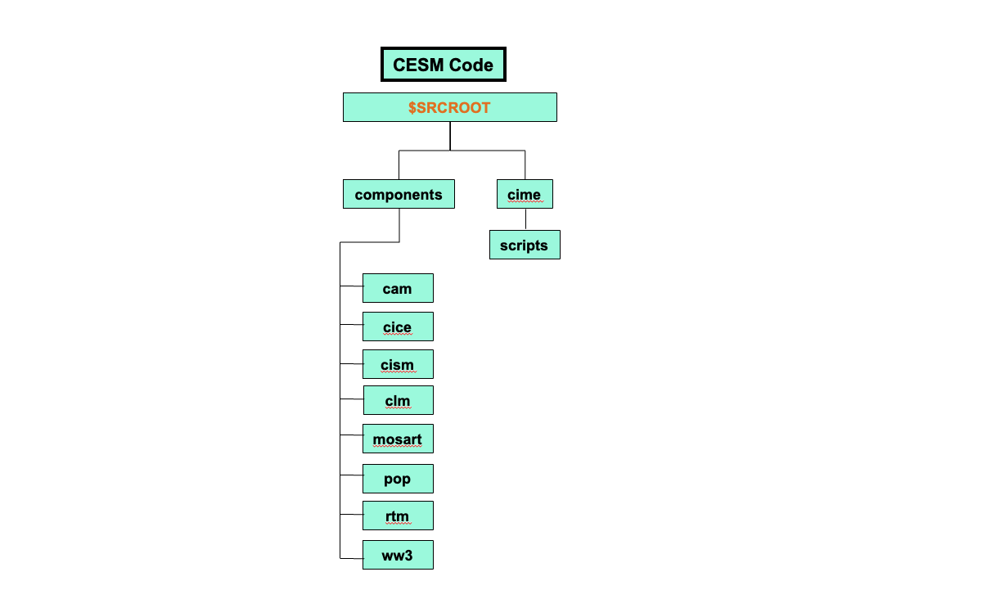

Explore CESM Code#
Having downloaded the CESM code to your workspace, we are now going to briefly locate and explore the different code directories within it. To get some familiarity with this area we are going to use the terminal window to explore the directories illustrated below this top level location. Specifically, in this exercise we will:
Step 1. Locate your CESM Code area on the GLADE file system.
Step 2. Examine the CIME Directory area.
Step 3. Examine the Model Components area.
Step 4. Look at the Community Atmosphere Model (CAM) Component Model.

Figure: Detailed view of the CESM2 Code Directory
For the current tutorial on derecho, the paths are:
$SRCROOT = /glade/u/home/$USER/code/my_cesm_code
Step 1. Locate Your Code Workspace Area#
Returning to your terminal window we will now locate your $SRCROOT location on the NCAR HPC file system.
pwd
Expected output:
/glade/u/home/$USER/code/my_cesm_code
If you have not done anything since the last exercise then you will already be in the $SRCROOT location. If your output doesn’t match the path above, then change the current directory to your Workspace Code directory:
cd /glade/u/home/$USER/code/my_cesm_code
List the contents of the Workspace Code directory with the ls long option:
ls -l
Expected output:
total 2119
-rw-r--r-- 1 $USER ncar 2116708 Jun 3 15:46 ChangeLog
-rw-r--r-- 1 $USER ncar 2433 Jun 3 15:46 ChangeLog_template
drwxr-xr-x 10 $USER ncar 4096 Jun 4 09:32 cime
drwxr-xr-x 4 $USER ncar 4096 Jun 3 15:46 cime_config
drwxr-xr-x 10 $USER ncar 4096 Jun 4 09:32 components
-rwxr-xr-x 1 $USER ncar 2475 Jun 3 15:46 describe_version
drwxr-xr-x 3 $USER ncar 4096 Jun 3 15:46 doc
-rw-r--r-- 1 $USER ncar 1409 Jun 3 15:46 Externals.cfg
-rw-r--r-- 1 $USER ncar 5498 Jun 3 15:46 LICENSE.txt
drwxr-xr-x 5 $USER ncar 4096 Jun 3 15:46 manage_externals
-rw-r--r-- 1 $USER ncar 8904 Jun 3 15:46 README.rst
If the output of these commands does not match for your CESM Workspace, then you will need to ask for help in configuring them. This area will be used for the remainder of the Tutorial so it is important to get this step right.
Step 2. Examine the CIME Directory#
In your terminal window, we will now move to the CIME directory and examine the contents. Remember that CIME is the Common Infrastructure for Modeling the Earth. It is a python-based framework that integrates the various components of the CESM into a single modeling framework. The CIME Scripts directory will be the location where you will start the Workflow of creating a new case through the rest of the Tutorial.
cd cime
List the contents of the CIME Directory:
ls -l
Expected output:
total 648
-rw-r--r-- 1 $USER ncar 618865 Jun 4 09:32 ChangeLog
-rw-r--r-- 1 $USER ncar 421 Jun 4 09:32 ChangeLog_template
-rw-r--r-- 1 $USER ncar 4000 Jun 4 09:32 CMakeLists.txt
drwxr-xr-x 5 $USER ncar 4096 Jun 4 09:32 config
-rw-r--r-- 1 $USER ncar 4670 Jun 4 09:32 CONTRIBUTING.md
drwxr-xr-x 3 $USER ncar 4096 Jun 4 09:32 doc
-rw-r--r-- 1 $USER ncar 444 Jun 4 09:32 index.html
-rw-r--r-- 1 $USER ncar 2461 Jun 4 09:32 LICENSE.TXT
-rw-r--r-- 1 $USER ncar 1747 Jun 4 09:32 README.md
drwxr-xr-x 7 $USER ncar 4096 Jun 4 09:32 scripts
drwxr-xr-x 8 $USER ncar 4096 Jun 4 09:32 src
drwxr-xr-x 7 $USER ncar 4096 Jun 4 09:32 tools
drwxr-xr-x 3 $USER ncar 4096 Jun 4 09:32 utils
Change into the CIME Scripts directory:
cd scripts
List the contents of the CIME Scripts directory:
ls -l
Expected output:
total 101
-rwxr-xr-x 1 $USER ncar 5128 Jun 4 09:32 create_clone
-rwxr-xr-x 1 $USER ncar 11117 Jun 4 09:32 create_newcase
-rwxr-xr-x 1 $USER ncar 29859 Jun 4 09:32 create_test
drwxr-xr-x 2 $USER ncar 4096 Jun 4 09:32 data_assimilation
drwxr-xr-x 4 $USER ncar 4096 Jun 4 09:32 fortran_unit_testing
drwxr-xr-x 3 $USER ncar 4096 Jun 4 09:32 lib
-rwxr-xr-x 1 $USER ncar 14663 Jun 4 09:32 query_config
-rwxr-xr-x 1 $USER ncar 9067 Jun 4 09:32 query_testlists
drwxr-xr-x 5 $USER ncar 4096 Jun 4 09:32 tests
drwxr-xr-x 3 $USER ncar 4096 Jun 4 09:32 Tools
Step 3. Examine the CESM Components Area#
In your terminal window, we will now move to the Components Directory and examine the contents of the individual sub models.
Figure: CESM2 Code Components
cd /glade/u/home/$USER/code/my_cesm_code
OR
Alternatively, you can use the cd ../.. to move up two levels in the directory hierarchy.
cd ../..
Change into the Components area of the Code Workspace:
cd components
List the contents of the Components Directory:
ls -l
Expected Output:
total 8
drwxr-xr-x 12 $USER ncar 4096 Jun 4 09:34 cam
drwxr-xr-x 7 $USER ncar 4096 Jun 4 09:32 cice
drwxr-xr-x 14 $USER ncar 4096 Jun 4 09:32 cism
drwxr-xr-x 12 $USER ncar 4096 Jun 4 09:31 clm
drwxr-xr-x 6 $USER ncar 4096 Jun 4 09:31 mosart
drwxr-xr-x 15 $USER ncar 4096 Jun 4 09:32 pop
drwxr-xr-x 6 $USER ncar 4096 Jun 4 09:32 rtm
drwxr-xr-x 6 $USER ncar 4096 Jun 4 09:31 ww3
Step 4. Look at the Community Atmosphere Model (CAM) Component Model#
As a final task in this exercise, we are going to have a quick look at the Community Atmosphere Model (CAM) component model. At this point we are just exploring the Workspace.
cd cam
List the contents of the CAM Directory:
ls -l
Expected Output:
total 26
drwxr-xr-x 6 $USER ncar 4096 Jun 4 09:32 bld
drwxr-xr-x 10 $USER ncar 4096 Jun 4 09:34 chem_proc
drwxr-xr-x 4 $USER ncar 4096 Jun 4 09:32 cime_config
-rw-r--r-- 1 $USER ncar 7501 Jun 4 09:32 CODE_OF_CONDUCT.md
drwxr-xr-x 2 $USER ncar 4096 Jun 4 09:32 doc
-rw-r--r-- 1 $USER ncar 685 Jun 4 09:32 Externals_CAM.cfg
-rw-r--r-- 1 $USER ncar 1155 Jun 4 09:32 Externals.cfg
drwxr-xr-x 5 $USER ncar 4096 Jun 4 09:32 manage_externals
-rw-r--r-- 1 $USER ncar 1925 Jun 4 09:32 README_EXTERNALS
-rw-r--r-- 1 $USER ncar 282 Jun 4 09:32 README.md
drwxr-xr-x 11 $USER ncar 4096 Jun 4 09:32 src
drwxr-xr-x 4 $USER ncar 4096 Jun 4 09:32 test
drwxr-xr-x 11 $USER ncar 4096 Jun 4 09:32 tools
Congratulations, you have now completed the CESM code exploration exercises!!